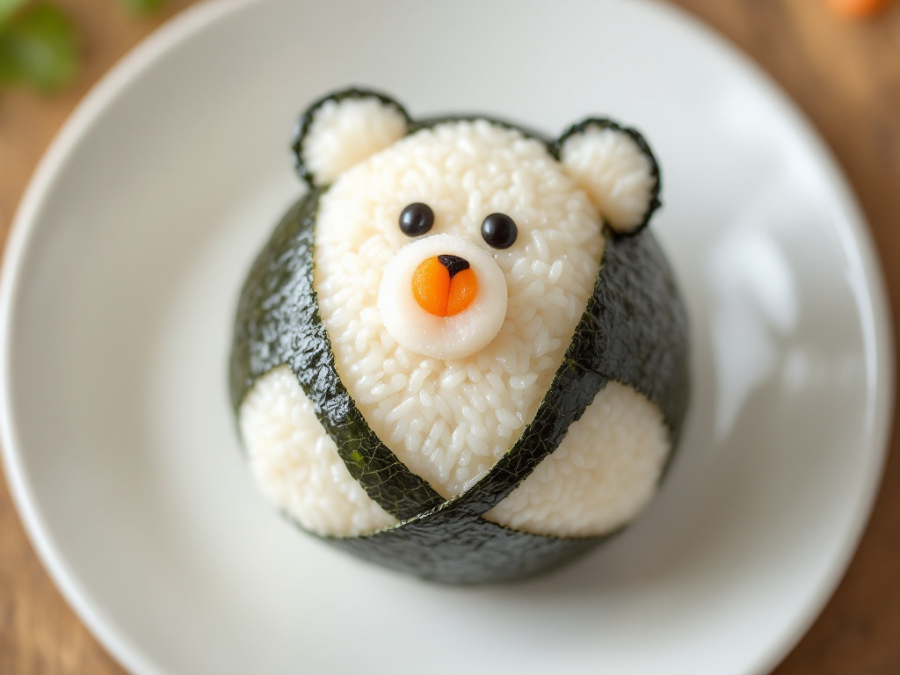

Onigiri de Oso
¡Hagamos unos onigiris adorables!

Información:
Esta receta es fácil y divertida de hacer, perfecta para sorprender a los más pequeños.
- Dificultad: Baja.
- Tiempo total: 20 min.
- Reposo: No requiere.
Ingredientes:
- Arroz cocido: 2 tazas
- Alga nori: 1 hoja
- Salmón ahumado: 50g
- Queso crema: 2 cucharadas
- Zanahorias pequeñas para decorar.
Pasos:
- Cocina el arroz y déjalo enfriar.
- Corta el alga nori en tiras para las orejas y la cara del oso.
- Forma bolas de arroz y rellénalas con salmón ahumado o queso crema.
- Decora las bolas de arroz con las tiras de alga nori para formar la cara y las orejas del oso.
- Usa pequeñas rodajas de zanahoria para hacer la nariz del oso.
- Sirve y disfruta de tus onigiris de oso.
Volver a lista de recetas.